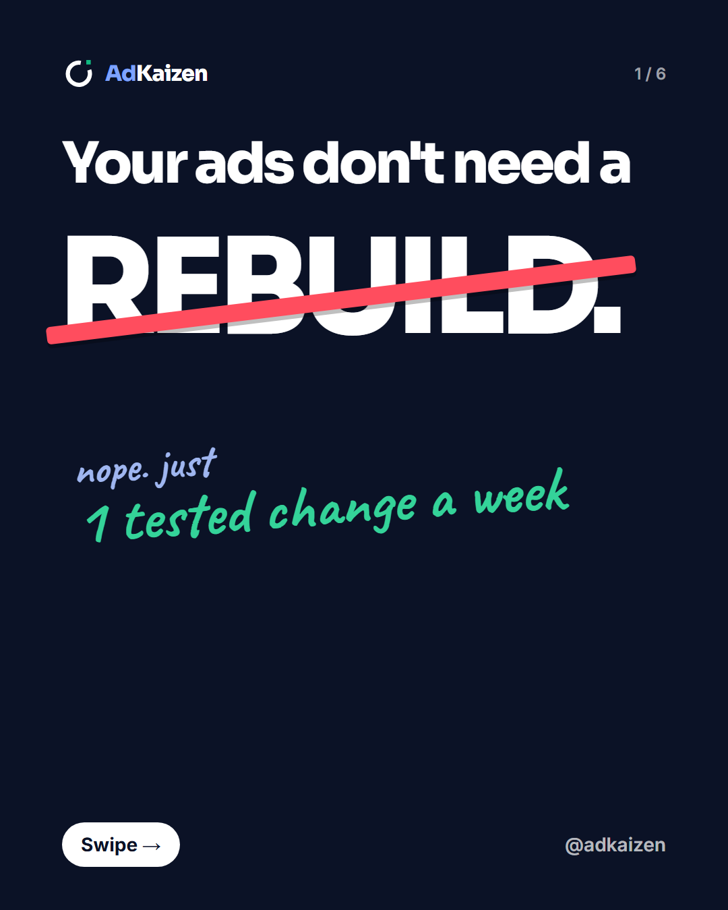
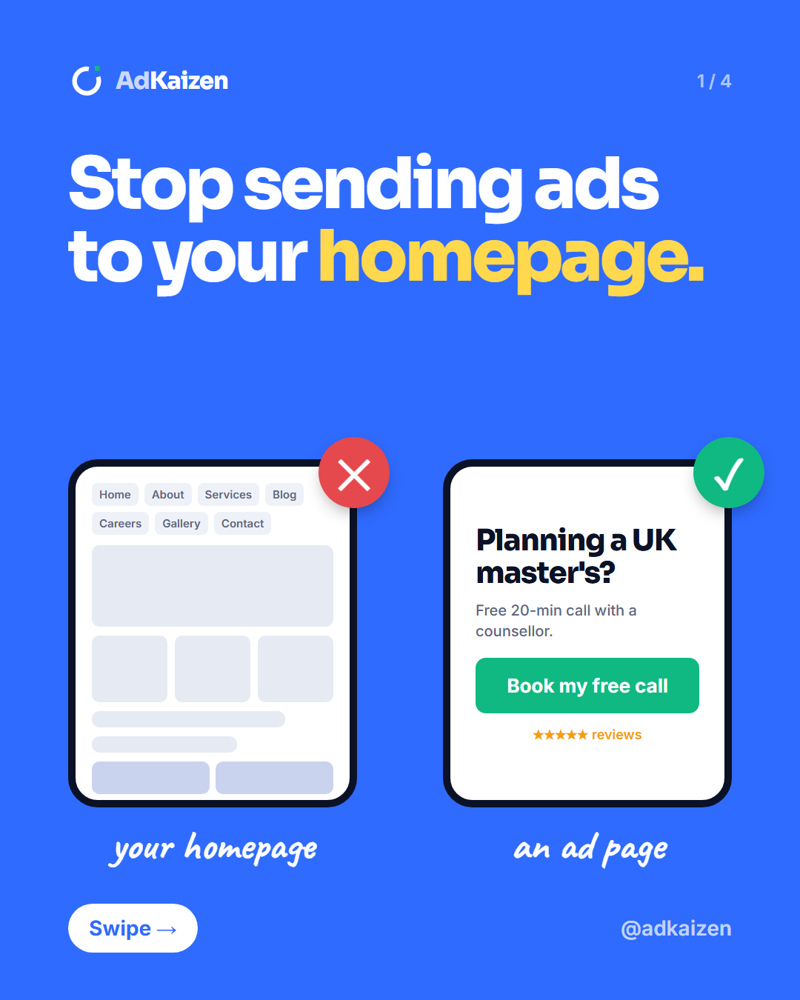
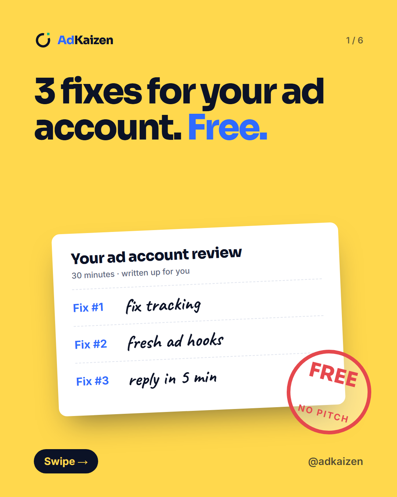

Everything to set up the profile, then the first 10 posts with dates. Tick each post when it's live; your ticks are saved in this browser.
3 posts a week1:00 PM ISTMon 30 Nov → Mon 21 Dec
1. Update the profile
Fill these in, top to bottom. Use Copy to paste each one.
Page name
AdKaizen
Categories (up to 3)
Marketing Agency, Advertising/Marketing, Internet Marketing Service
Bio (max 101 characters)
Performance marketing & lead generation for India & the GCC. Growth that compounds, not guesswork.
Username
adkaizen
Settings → Username. If it's taken, use adkaizen.agency.
Website
https://thedigitalkaizen.github.io/Kaizen/
Change to adkaizen.in once you buy the domain.
Email
Your business email
Switch to hanif@adkaizen.in once Zoho Mail is set up.
Phone / WhatsApp
+91 76664 59020
Connect WhatsApp when Facebook asks.
Address
No address (service area)
Unless you want an office address public.
Service area
Your city, India, UAE, Saudi Arabia, Qatar, Bahrain, Oman
Hours
Mon–Sat, 10:00–19:00
Or what you actually work. Avoid "Always open".
Action button
Send WhatsApp message
About → Details
AdKaizen is a performance marketing and lead generation agency for brands in India and the GCC.
Kaizen means continuous improvement. We run every account as a weekly test-and-improve loop: tested changes every week, keeping what lowers your cost per lead and dropping what doesn't. Small gains, stacked, so results compound.
What we do:
• Meta Ads (Facebook & Instagram)
• Google Ads (Search, Performance Max, YouTube)
• SEO
• Lead generation and landing pages
• AI automation for faster lead follow-up
Who we work with: education and study abroad, travel and Umrah, food and D2C brands, and other businesses that need a steady flow of qualified leads.
Book a free 30-minute strategy call. You'll leave with the top 3 fixes for your ad account, in writing, whether or not you work with us.
Service: Meta Ads
Facebook & Instagram campaigns with weekly creative testing to keep cost per lead falling.
Service: Google Ads
Search, Performance Max & YouTube campaigns that capture people ready to buy.
Service: SEO
Technical and content SEO that builds steady, free traffic over time.
Service: Lead Generation
Landing pages, lead forms and follow-up built to turn clicks into enquiries.
Service: AI Automation
Instant WhatsApp/email replies and lead alerts so no enquiry goes cold.
Service: Free Strategy Call
30 minutes, top 3 fixes for your ad account, in writing.
Monday, Wednesday and Friday at lunchtime (11:30 AM in Dubai). Facebook is busiest around lunch. Times are a starting point: after 4 weeks, check the platform's insights and move to when your followers are actually online.
Ready to copy. Every claim is about how AdKaizen works, with no made-up results.
1One tested change a week · ★ pin thisMon 30 Nov, 1:00 PM ISTImage post
Results dropped? Don't rebuild your ads. Do this instead.
Change one thing a week.
Pick the biggest leak (the ad, the audience, the landing page or how fast you reply), test one fix for 7 days, keep what works, drop what doesn't.
12 weeks later you've stacked 12 improvements instead of starting from zero 3 times.
That's the Kaizen way, and it's how we run every account at AdKaizen.
Image to attach:

instagram-carousels\01-one-test-a-week\
2Cheap leads vs good leadsWed 2 Dec, 1:00 PM ISTQuestion post
Quick question for business owners: what's your cost per lead?
Now the harder one: how many of those leads actually pick up the phone?
A cheap lead that never answers isn't cheap. We track cost per qualified lead and cost per booked call, because that's what pays the bills.
What does your ad report show you? Tell us in the comments 👇
Image to attach:instagram-carousels\02-cheap-leads\
3Reply to leads fastFri 4 Dec, 1:00 PM ISTImage post
Someone filled your form at 9:40pm. When did you reply?
The first business to reply usually gets the conversation.
Three things we set up for every client:
✅ An instant WhatsApp or email reply
✅ An alert to the sales person's phone
✅ A 5-minute call rule during working hours
No extra ad spend. Just fewer paid leads going cold.
Image to attach:instagram-carousels\09-reply-fast\
4Creative fatigueMon 7 Dec, 1:00 PM ISTImage post
Is your best ad slowly dying?
Watch for these three signs:
1. The same people see it again and again (frequency going up)
2. Fewer people click
3. Your cost per lead rises with nothing else changed
The fix: keep your winning offer, but give it new hooks and new formats. One new creative every week keeps your costs steady.
Image to attach:instagram-carousels\03-dying-ad\
5Landing page, not homepageWed 9 Dec, 1:00 PM ISTImage post
Your ads are good. Your landing page might be the problem.
Sending ad traffic to your homepage? Try a page built for that one ad:
• Same promise as the ad
• One button: call, WhatsApp or a short form
• Proof next to the button
• Nothing else to click
Same budget, same ads, more enquiries.
Image to attach:

instagram-carousels\04-landing-page\
6Fix tracking firstFri 11 Dec, 1:00 PM ISTImage post
Before you spend more on ads, check this.
Can you see which ad brought each sale?
If not, more budget is a guess. Check:
✓ Meta Pixel + Conversions API
✓ Google Ads conversion tracking
✓ GA4
✓ Lead source saved in your CRM
Fix tracking first. Then scale.
Stop picking 30 interests on Facebook Ads.
Meta's system now finds buyers better than narrow interest targeting, if your ad tells it who it's for.
So say it in the first line: "Planning a UK master's for September?" "Booking Umrah for Ramadan?"
Broad audience + a clear ad usually beats a tiny audience + a vague ad.
Image to attach:instagram-carousels\05-meta-targeting\
8Negative keywords on GoogleWed 16 Dec, 1:00 PM ISTImage post
Are your Google Ads showing for "free" and "jobs" searches?
Open your search terms report. You might be paying for:
• "free" searches
• job seekers
• competitor names
• cities you don't serve
Add them as negative keywords every week and move that money to searches that convert.
Image to attach:instagram-carousels\06-negative-keywords\
9Plan around your seasonFri 18 Dec, 1:00 PM ISTImage post
Your busy season starts earlier than you think.
Intakes, Umrah, Ramadan, wedding season: the winners start 6 weeks early.
📅 6–8 weeks before: build your audience with useful content
📅 3–4 weeks before: lead ads + retargeting
📅 Peak: put budget behind what's proven
📅 After: follow up everyone who wasn't ready yet
Image to attach:instagram-carousels\07-plan-your-season\
10Free strategy call offerMon 21 Dec, 1:00 PM ISTOffer post
Free: 3 fixes for your ad account in 30 minutes.
Book a free strategy call with AdKaizen. Show us your account and last month's numbers, and you'll leave with the top 3 things we'd fix first, in writing, whether or not you work with us.
Meta Ads · Google Ads · SEO · Lead generation
India & the GCC
Book here: thedigitalkaizen.github.io/Kaizen
Image to attach:

instagram-carousels\08-free-strategy-call\
5. Tips for Facebook
Add an image to every post. The carousel cover listed with each post is ready to use, or upload all slides as a multi-photo post.
Put the website link in the post itself (Facebook is fine with links, unlike LinkedIn).
Pin post 1 to the top of the Page.
Turn on Reviews (Settings → Privacy → Page and tagging) so clients can recommend you.
Invite your friends to like the Page once, after the first 3 posts are up.
6. After Mon 21 Dec
After the 10 drafts, cross-post your Instagram carousels here as multi-photo posts, and add 1 question post a week ("What's your cost per lead right now?").
AdKaizen · +91 76664 59020 · Website: thedigitalkaizen.github.io/Kaizen (switch to adkaizen.in once live)